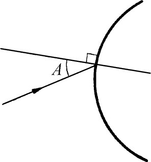

1．促使微积分产生的因素
紧接着函数概念的采用，产生了微积分，它是继欧几里得几何之后，全部数学中的一个最大的创造。虽然在某种程度上，它是已被古希腊人处理过的那些问题的解答，但是微积分的创立，首先是为了处理17世纪主要的科学问题的。
有四种主要类型的问题。第一类是已知物体移动的距离表示为时间的函数的公式，求物体在任意时刻的速度和加速度；反过来，已知物体的加速度表示为时间的函数的公式，求速度和距离。这类问题是研究运动时直接出现的，困难在于17世纪所涉及的速度和加速度每时每刻都在变化。比如，计算瞬时速度就不能像计算平均速度那样用运动的时间去除移动的距离，因为在给定的瞬时，移动的距离和所用的时间都是0，而0/0是无意义的。但是根据物理，每一个运动的物体在它运动的每一时刻必有速度，这也是无疑的。已知速度公式求移动距离的问题也遇到同样的困难，因为速度每时每刻都在变化，所以不能用运动的时间乘任意时刻的速度来得到移动的距离。
第二种类型的问题是求曲线的切线。这个问题的重要性来源于好几个方面，它是纯几何的问题，而且对于科学应用有巨大的重要性。正如我们知道的那样，光学是17世纪的一门较重要的科学研究。透镜的设计直接吸引了费马、笛卡儿、惠更斯和牛顿。要研究光线通过透镜的通道，必须知道光线射入透镜的角度以便应用反射定律。重要的角是光线同曲线的法线间的夹角（图17.1）。法线是垂直于切线的，所以问题在于求出法线或者是求出切线。另一个涉及曲线的切线的科学问题出现于运动的研究中。运动物体在它的轨迹上任一点处的运动方向是轨迹的切线方向。

图17.1
实际上，甚至“切线”本身的意义也是没有解决的问题。对于圆锥曲线，把切线定义为和曲线只接触于一点而且位于曲线的一边的直线就足够了。这个定义古希腊人曾经用过，但是对于17世纪所用的较复杂的曲线，它就不适用了。
第三类问题是求函数的最大值与最小值。炮弹在炮筒里射出，它运行的水平距离，即射程，依赖于炮筒对地面的倾斜角，即发射角。一个“实际”问题是求能获得最大射程的发射角。17世纪初期，伽利略断定（在真空中）最大射程在发射角是45°时达到；他还得出炮弹从各个不同角度发射后所达到的不同的最大高度。研究行星的运动也涉及最大值和最小值的问题，例如求行星离开太阳的最远和最近的距离。
第四类问题是求曲线长（例如行星在已知时期中移动的距离）、曲线围成的面积、曲面围成的体积、物体的重心、一个体积相当大的物体（例如行星）作用于另一物体上的引力。古希腊人用穷竭法求出了一些面积和体积。尽管他们只是对于比较简单的面积和体积应用了这个方法，但也必须添上许多技巧，因为这个方法缺乏一般性。他们还经常得不到数字的解答。当阿基米德的工作在欧洲闻名时，求长度、面积、体积和重心的兴趣复兴了。穷竭法先是逐渐地被修改，后来由于微积分的创立而被根本地修改了。